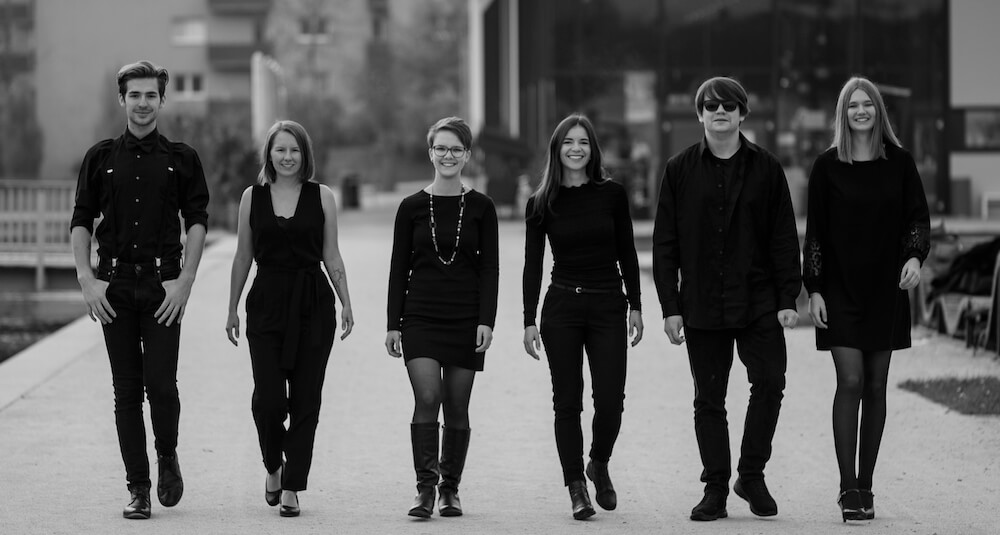
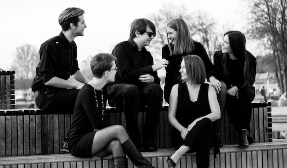

Durch die Musik haben wir uns kennen gelernt. Wir sind Solisten und doch
singen wir gemeinsam. Wir singen Pop, Jazz und Soul. Wir singen unter
der Dusche und noch lieber auf Bühnen im Licht der Scheinwerfer. Wir
singen a cappella, mit Klavier oder Band_
Wir sind kein Chor wie jeder andere. Wir sind anders_

anders_chor ist ein Vokalensemble
bestehend aus (ehemaligen) Musikschüler_innen der LMS
Neuhofen/Krems, die sich durch den Jazz- und Populargesangs-Unterricht kennen gelernt
haben. anders_chor ist ein vielseitiges Ensemble: wir gestalten gerne
ganze Konzertabende, singen aber auch im Rahmen von Veranstaltungen wie
Firmenfeiern, Hochzeiten, Taufen…
Wir wurden beim Landeswettbewerb (Traun) als auch beim Bundeswettbewerb (Wien) podium.jazz.pop.rock… 2021 in der Kategorie Pop:Rock mit einem 1. Preis ausgezeichnet.
Firmenfeier? Hochzeit? Taufe? Konzertabend? Wir singen gerne bei deiner
Veranstaltung.
Kontaktiere uns für mehr Infos unter
booking@anderschor.at.
